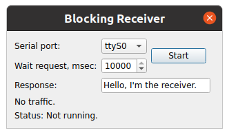

Blocking Receiver
Shows how to use the synchronous API of QSerialPort in a non-GUI thread.
Blocking Receiver shows how to create an application for a serial interface using QSerialPort's synchronous API in a non-GUI thread.

QSerialPort supports two general programming approaches:
- The asynchronous (non-blocking) approach. Operations are scheduled and performed when the control returns to Qt's event loop. QSerialPort emits a signal when the operation is finished. For example, QSerialPort::write() returns immediately. When the data is sent to the serial port, QSerialPort emits bytesWritten().
- The synchronous (blocking) approach. In non-GUI and multithreaded applications, the
waitFor...()functions can be called (i.e. QSerialPort::waitForReadyRead()) to suspend the calling thread until the operation has completed.
In this example, the synchronous approach is demonstrated. The Terminal example illustrates the asynchronous approach.
The purpose of this example is to demonstrate a pattern that you can use to simplify your serial programming code, without losing responsiveness in your user interface. Use of Qt's blocking serial programming API often leads to simpler code, but because of its blocking behavior, it should only be used in non-GUI threads to prevent the user interface from freezing. But contrary to what many think, using threads with QThread does not necessarily add unmanageable complexity to your application.
This application is a Receiver, that demonstrate the work paired with the sender application Blocking Sender example.
The Receiver application receives the request via serial port from the Sender application and send a response to it.
We will start with the ReceiverThread class, which handles the serial programming code.
class ReceiverThread : public QThread { Q_OBJECT public: explicit ReceiverThread(QObject *parent = nullptr); ~ReceiverThread(); void startReceiver(const QString &portName, int waitTimeout, const QString &response); signals: void request(const QString &s); void error(const QString &s); void timeout(const QString &s); private: void run() override; QString m_portName; QString m_response; int m_waitTimeout = 0; QMutex m_mutex; bool m_quit = false; };
ReceiverThread is a QThread subclass that provides an API for receive requests from Sender, and it has signals for delivering responses and reporting errors.
You should call startReceiver() to startup Receiver application. This method transfers to the ReceiverThread desired parameters for configure and startup the serial interface. When ReceiverThread received from Sender any request then emitted the request() signal. If any error occurs, the error() or timeout() signals is emitted.
It's important to notice that startReceiver() is called from the main, GUI thread, but the response data and other parameters will be accessed from ReceiverThread's thread. ReceiverThread's data members are read and written from different threads concurrently, so it is advisable to use QMutex to synchronize access.
void ReceiverThread::startReceiver(const QString &portName, int waitTimeout, const QString &response) { const QMutexLocker locker(&m_mutex); m_portName = portName; m_waitTimeout = waitTimeout; m_response = response; if (!isRunning()) start(); }
The startReceiver() function stores the serial port name, timeout and response data, and QMutexLocker locks the mutex to protect these data. We then start the thread, unless it is already running. QWaitCondition::wakeOne() will be discussed later.
void ReceiverThread::run() { bool currentPortNameChanged = false; m_mutex.lock(); QString currentPortName; if (currentPortName != m_portName) { currentPortName = m_portName; currentPortNameChanged = true; } int currentWaitTimeout = m_waitTimeout; QString currentRespone = m_response; m_mutex.unlock();
In the run() function, start by acquiring the mutex lock, fetch the serial port name, timeout and response data from the member data, and then release the lock again. Under no circumstance should the method startReceiver() be called simultaneously with a process fetching these data. QString is reentrant but not thread-safe, and it is not recommended to read the serial port name from one startup, call and timeout or response data of another. ReceiverThread can only handle one startup at a time.
The QSerialPort object we construct on stack into run() function before loop enter:
QSerialPort serial;
while (!m_quit) {
This allows us once to create an object, while running loop, and also means that all the methods of the object will be executed in the context of the run() thread.
In the loop, check whether the name of the serial port for the current startup has changed or not. If it has, re-open and reconfigure the serial port.
if (currentPortNameChanged) {
serial.close();
serial.setPortName(currentPortName);
if (!serial.open(QIODevice::ReadWrite)) {
emit error(tr("Can't open %1, error code %2")
.arg(m_portName).arg(serial.error()));
return;
}
}
if (serial.waitForReadyRead(currentWaitTimeout)) {
The loop will continue waiting for request data:
// read request
QByteArray requestData = serial.readAll();
while (serial.waitForReadyRead(10))
requestData += serial.readAll();
Warning: The method waitForReadyRead() should be used before each read() call for the blocking approach, because it processes all the I/O routines instead of Qt event-loop.
The timeout() signal is emitted if an error occurs when reading data.
} else {
emit timeout(tr("Wait read request timeout %1")
.arg(QTime::currentTime().toString()));
}
After a successful read, try to send a response and wait for completion of the transfer:
// write response
const QByteArray responseData = currentRespone.toUtf8();
serial.write(responseData);
if (serial.waitForBytesWritten(m_waitTimeout)) {
const QString request = QString::fromUtf8(requestData);
emit this->request(request);
Warning: The method waitForBytesWritten() should be used after each write() call for the blocking approach, because it processes all the I/O routines instead of Qt event-loop.
The timeout() signal is emitted if an error occurs when writing data.
} else {
emit timeout(tr("Wait write response timeout %1")
.arg(QTime::currentTime().toString()));
}
After a successful writing is emitted, request() signal containing the data received from the Sender application:
emit this->request(request);
Next, the thread switches to reading the current parameters for the serial interface, because they can already have been updated, and run the loop from the beginning.
m_mutex.lock();
if (currentPortName != m_portName) {
currentPortName = m_portName;
currentPortNameChanged = true;
} else {
currentPortNameChanged = false;
}
currentWaitTimeout = m_waitTimeout;
currentRespone = m_response;
m_mutex.unlock();
}
Running the Example
To run the example from Qt Creator, open the Welcome mode and select the example from Examples. For more information, visit Building and Running an Example.
See also Serial Terminal and Blocking Sender.